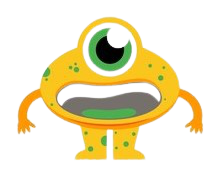

<div class="mission" style="background-image: url('../../../assets/images/kitchen.jpg');">
    <div class="container">
        
        <div class="text">
            <div class="details">Vous venez de finir de regarder votre film. <br>
                Mais vous savez que vous utiliserez encore votre télévision ou votre ordinateur <br>
                d'ici moins de 2h. <br>
                Quelle la meilleure attitude : <br>
                - Eteindre la télévision/ordinateur puis le rallumer lorsque vous en aurez besoin. <br>
                - Laisser la télévision/ordinateur en mode veille.
            </div>
        </div>
        <div class="answers">
            <a [routerLink]="['/missionNine']" routerLinkActive="active" >
                <p class="answer one" (click)="reward(20, 20)">Eteindre</p>
            </a>
            <a [routerLink]="['/missionNine']" routerLinkActive="active" >
                <p class="answer two" (click)="reward(0, -20)">Mode veille</p>
            </a>
        </div>
    </div>
</div>
